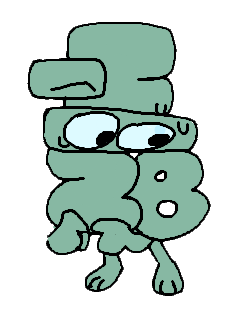

-⁵⁄₂₈

- Alias
- Negative Five Twenty Eighths
- Species
- Algebralien
- Identity
- He/him, they/them, genderless
- Time in the Inbetween
- ~90 blooms
- Favorite food
- Scrambled eggs
- Favorite drink
- Fruit juice
- Hobbies
- Reading, puzzles, researching niche subjects
- Favorite thing to do
- Talk to Dream about his interests
- Favorite resident
- Dream
Playlist
-⁵⁄₂₈ is a quiet, odd, but also gentle presence in The House. He watches others from a distance, not favoring being in the middle of attention. He likes being around his small group of friends, and enjoys calm environments where he feels safe. If you're ever around him, make sure to listen closely if he speaks, since he does so rarely and quietly. His intentions are also always pure.